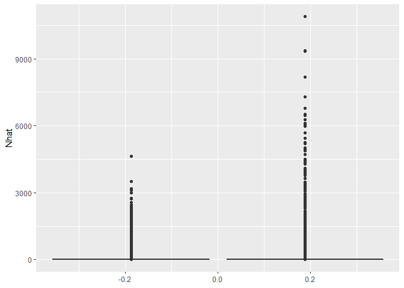
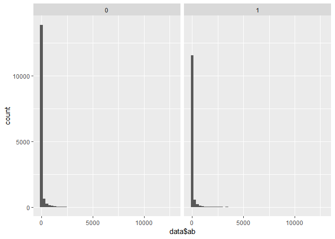

1.A 48.99335 54.12365 38 66 48.10512 55.11201

Range of pre: 0 ~ 4860.879 Range of post: 0 ~ 12783.97
Confidence interval
Normal
pre <- subset(data, impact == 0)
post <- subset(data, impact == 1)
mean(pre$ab) + 1.96 * (sd(pre$ab) / sqrt(15129))
## [1] 55.03908
mean(pre$ab) - 1.96 * (sd(pre$ab) / sqrt(15129))
## [1] 48.07792
mean(post$ab) + 1.96 * (sd(post$ab) / sqrt(12725))
## [1] 82.5884
mean(post$ab) - 1.96 * (sd(post$ab) / sqrt(12725))
## [1] 68.19987
poisson
mean(pre$ab)+1.96*sqrt(mean(pre$ab)/(15129))
## [1] 51.67292
mean(pre$ab)-1.96*sqrt(mean(pre$ab)/(15129))
## [1] 51.44408
mean(post$ab)+1.96*sqrt(mean(post$ab)/(12725))
## [1] 75.545
mean(post$ab)-1.96*sqrt(mean(post$ab)/(12725))
## [1] 75.24327
boostrap
results <- matrix(0, nrow = 1000, ncol = 1)
for (j in 1:1000) {
rowsToUse <- sort(sample(which(data$impact == 0),
length(which(data$impact == 0)), replace = T))
results[j, ] <- mean(data$Nhat[rowsToUse] / data$area[rowsToUse])
}
quantile(results, probs = c(0.025, 0.975))
## 2.5% 97.5%
## 48.04799 54.91988
results <- matrix(0, nrow = 1000, ncol = 1)
for (j in 1:1000) {
rowsToUse <- sort(sample(which(data$impact == 1),
length(which(data$impact == 1)), replace = T))
results[j, ] <- mean(data$Nhat[rowsToUse] / data$area[rowsToUse])
}
quantile(results, probs = c(0.025, 0.975))
## 2.5% 97.5%
## 68.34301 82.24251